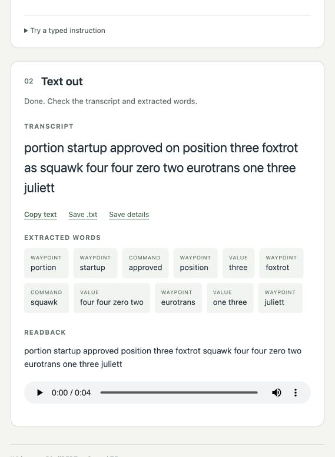

Ethan Zhang · student research project · 2025–26
I could hear every word. I couldn’t follow a sentence.
That was me on a seaplane in the Maldives, listening to the pilots’ radio. So I trained a small speech model to transcribe air traffic control, with one hour of real audio to teach it, and then checked whether my own results held up.
In 2026 I went back over everything, found what was wrong with my own testing, fixed it and retrained.
On recordings it had never heard, my best model’s word error rate is 14.38%. My 2025 model: 18.64%. Whisper out of the box: 56.87%.
699 real training clips · 4,808 clips of generated speech · about 30 experiments
Watch one call go through it See the results Read the paper (PDF)
Research prototype. Not for operational use.
Archived app output · not live

push and startas
portion startup. Traced step by step below.
A small, strict code that borrows English
After that flight I watched recordings of pilots and controllers, then read about the aircraft: the history of different models, how a plane is built, how a three-spool engine works. What I had heard wasn’t quite English. Numbers are read one digit at a time, and nine is niner. Most calls follow one pattern: who is being called, what to do, and a number, said fast, in every accent, over a channel that cuts off the top and bottom of the voice.
OpenAI’s Whisper learnt speech from 680,000 hours of audio, 438,000 of them English (model card). In my first tests it turned the callsign Eurotrans into year trans, and given pure static, it wrote down a whole sentence nobody had said. On this radio, a model that invents words is worse than one that mishears them. So my question was: can a small model get better at this language with very little data?
One radio call, traced through the system
It runs on my own computer in three steps. Whisper, fine-tuned on ATC radio, turns audio into words (the app now uses my best 2026 model, built on Whisper-medium). DistilBERT labels each word as a callsign (who is being spoken to), a command or a value. Then plain rules check that each number is even possible. Here is one real call going through it, as my 2025 model (Whisper-small) heard it.
Archived output from the app with my 2025 model. No model runs in this page.
-
1 What the model heard
portion startup approved on position three foxtrot as squawk four four zero two eurotrans one three juliett
My 2025 model’s transcript of a 6.12-second recording, which actually says
push and start approved
, a standard instruction my own generator also uses. Every later step inherits the mistake.This clip is one of the 74 unseen test clips. My best 2026 model hears it as
proceed and start approved
: closer, but still notpush
. A smaller 2026 model heardsion start approved
, because Sion is one of the airports in its training data. -
2 How it labelled each word
- portionwaypoint
- startupwaypoint
- approvedcommand
- positionwaypoint
- threevalue
- foxtrotwaypoint
- squawkcommand
- four four zero twovalue
- eurotranswaypoint
- one threevalue
- juliettwaypoint
It got the commands and the transponder code right, and went wrong on words it didn’t know:
portion
,startup
andposition
became waypoints, and the callsigneurotrans one three juliett
was split in three. Its training labels came from my word lists, which called any unfamiliar word of three or more letters a waypoint. That is the likeliest reason, though I haven’t tested it. marked words are the ones it got wrong -
3 Whether the numbers are possible
Transponder codes are octal, so a squawk needs four digits with no 8 or 9. 4402 passes. (This describes the rule in the code; the saved run doesn’t log the check.)
Passing doesn’t make an instruction right. The prototype knows nothing about where the aircraft is, what traffic is around it, or whether the instruction was allowed.
See the full screenshot
Why this is a saved run rather than a live demo
A live version would play real audio beside the model’s outputs. The model files are several gigabytes and run on my own machine, not in a browser, so this page shows a run I saved from the app instead of inventing one. A replay with audio needs a recording I have the right to publish; I haven’t made that yet.
Teaching it with one hour of audio
The only free air traffic audio I found at the time was the one-hour ATCO2 set: 699 short clips to train a model with about 240 million parameters. Copying clips faster, slower and noisier made little difference, because the model still heard the same voices saying the same sentences. So I made new ones.
Write sentences that could be real
Air traffic phrasing is regular enough to generate, so I wrote templates for taxiing, take-off, landing, radar vectors and handoffs, and filled them with numbers that obey the rules. Transponder codes, for example, are octal: squawk 4408 sounds plausible and cannot exist, so the generator never makes it. Synthetic data only helps if it could have been real. Then 31 text-to-speech voices, from British and Indian to Nigerian and Filipino English, read the sentences at random speeds: 4,808 clips.
The ranges the generator used
Only the first three are real format rules. The rest are intervals I chose, not rules of aviation, and the app’s own checker uses much wider limits.
| Squawk | four digits, 0 to 7 onlyTransponder codes are octal. |
|---|---|
| Heading | 001 to 360, three digits, read digit by digitA compass heading, said the way controllers say it. |
| Frequency | 118 to 136 MHz plus a decimalInside the aviation voice band. |
| Flight level | FL060 to FL430, any whole number, so odd levels like FL347 come out tooMy choice. Levels outside it exist, and real ones are mostly in tens. |
| Speed | 160 to 310 knots, in tensMy choice. |
| Wind | any direction, 3 to 25 knotsMy choice. |
Make clean speech sound like a radio
Text-to-speech sounds like a studio, so I wrote a simulated radio: cut everything above
4 kHz, add engine rumble and static, crush the signal into coarse levels, keep only 300 to
3,400 Hz (the telephone band; an aviation channel may stop nearer 2.5 kHz), overdrive it, and end with the click of the transmit button.
Each stage has a reason. The engine rumble is white noise added up over time; adding up is a discrete
integral, which divides each frequency’s amplitude by that frequency, so the power falls as
1/f². That was the idea. When I measured it in 2026, about 99% of that noise’s power sat
below 20 Hz, too low to hear, and my own filter later in the chain removed nearly all the rest:
after it, the engine
was about 34 dB quieter than the static. My training audio had
almost no engine noise in it.
I called these clips my GAN
data at the time. Wrong word: a GAN trains two networks against
each other, and nothing here is trained. It is signal processing.
Listen: one call, clean and through my simulated radio
A sentence from my generator, read by a text-to-speech voice: the one my app uses for its spoken readback. It is not a recording of a real controller, and no model runs on it here: this only shows what the radio does to a voice.
Channel: Radio
Press Start, then flip between Clean and Radio. Both replay the same recording, so the only thing changing is the channel.
Time runs left to right, frequency bottom to top, darker is stronger. With the radio on, the lower panel loses everything above about 3.4 kHz and gains a floor of noise.
Switch the seven stages on and off
In the order my Python script applies them. The browser version approximates it, and says where.
-
Throws away everything above 4 kHz. The Python version resamples to 8 kHz and back; the browser uses low-pass filters at 4 kHz, which is similar but not identical.
-
White noise summed over time, so its power falls as 1/f². Most of it is below 20 Hz, and the voice-band filter below removes nearly all the rest, so turn that filter off to hear it.
-
Receiver hiss with a flat spectrum. This is the kind of noise early Whisper wrote whole sentences out of.
-
Squashes the signal into coarse steps and back, which adds grit. My code rounds to steps of 1/128 over a signed range, which gives 257 possible values, not 128. Real airband radio is analogue AM and has no such stage. I borrowed it from telephones, and it is the part of the chain I would defend least.
-
Keeps only 300 to 3,400 Hz, the telephone band. ICAO’s guidance for the newer 8.33 kHz aviation channels assumes about 2,500 Hz of audio, so a real channel may cut off lower. The browser stacks two second-order filters on each edge; I haven’t checked that this exactly matches the Python filter.
-
Amplifies and flattens the peaks, like a microphone held too close. Clipping creates frequencies that weren’t in the original.
-
A short burst of noise, the click when the transmit button is let go.
Try your own voice
Your audio stays in this page. Nothing is recorded, saved or sent, and you won’t hear yourself unless you tick the box, so it can’t feed back.
The noise levels are set by ear, not calibrated, so no signal-to-noise ratio is shown. Clean opens each filter up to the edges of the audio range rather than removing it, so it is close to a bypass but not exactly one. The test vowel and sweep are generated fresh each time, so only the spoken call gives a fair before-and-after.
Half a point
I trained in three rounds, real clips first and synthetic last, and generated extra sentences around names the model kept missing, like Stefanik and Eurotrans. I tried a model six times bigger, a list of callsigns to steer the decoder, and a language model to tidy the transcripts. It barely moved: the scores I recorded changed by less than half a point, and the bigger model did worse with my settings. Looking back in 2026, I found four likely reasons. Text-to-speech voices are calmer than real controllers. A file-path bug meant about a third of one training round was probably silence. And two were about my own measuring: I had chosen the hard words by looking at the test clips, and the test clips themselves turned out to overlap with training.
So in 2026 I tested it again, properly: the same model trained with and without the synthetic clips, scored on recordings neither had heard. The synthetic clips still didn’t help (results below).
Going back over everything
In 2026 I went back over every script and every number before showing this to anyone. I found four problems. Then I fixed what I could and trained the model again, this time testing it properly.
-
The test wasn’t really unseen
I had split clips, not recordings, so 101 of my 175 test clips came from recordings the model had trained on: same voices, same frequency, same background hum. (Unseen here means a different recording, not a different airport or controller; a whole new airport is tested below.) I had also used the test clips to pick checkpoints and tune the decoder.
74 don’tWhat I did: kept the 74 clips from recordings no model had trained on as an unseen test, and used the other 101 only for making choices. On the unseen clips my 2025 model scores 18.64%, better than its 20.31% overall, so any help it got from the overlap is too small for me to detect.
-
A bug in how the model learned
My training code gave the model its
start of transcript
marker twice, and left out theEnglish
andtranscribe
markers it is always given when it runs. So it practised a slightly different task from the one it was used for.What I did: fixed both, wrote a test for it, and retrained from scratch. The fixed model scores 19.28% on the unseen clips, the same as the old one within noise. The bug cost less than I expected.
-
One old score was too good
A 2025 script reached about 19% by quietly rewriting known mistakes into the right answer on both sides, turning ONE NINE JAPAN into O NI PAN.
What I did: kept it as a record and stopped counting it. Every number below is scored plainly.
-
The tagger was marking its own homework
Its reference labels came from my word lists, not a person. Of the 140 words those rules called ordinary, it labelled 66 as waypoints.
Still open: telling the model’s mistakes from the rules’ needs a person to label a sample by hand.
What the numbers say now
With the test fixed, I tried to beat my 2025 model. I retrained it with the fixes alone; with my synthetic radio clips mixed in; and with ten and a half hours of real controller and pilot speech from Czech airspace, the UWB-ATCC corpus. I averaged the weights of two of those models, a trick called a model soup: models fine-tuned from the same start often sit in the same valley of the error surface, so their average can beat both. Last, I trained Whisper-medium, three times the size of small, on the same real speech. To fit it in my laptop’s memory I froze its weights and trained small add-on matrices instead (LoRA), about 4% as many numbers as the whole model. Trained on my 699 clips alone, the bigger model already scored 15.65%, so most of its gain comes from size, not from the extra speech. Averaging those two Whisper-medium models, the same soup trick, gave my best model. Restarting the bigger model with fresh adapters for more epochs did not help, but every run I kept was still improving when it reached its planned number of epochs, so I don’t know whether training the same run for longer would have.
Everything here is measured on the 74 unseen clips, from recordings none of these models heard in training. Each 2026 model and its decoding settings were chosen on the other 101 clips, so the test clips played no part in any 2026 choice. (My 2025 model was tuned on the old test clips, which include these 74, so its score may be a little flattering.)
56.87% → 18.64%
Fine-tuning on 699 clips cut unmodified Whisper-small’s error rate by two thirds.
14.38%
My best model now, a soup of two Whisper-medium models: 4.26 points better than 2025. Even at the edge of its 95% range it is 1.96 points better.
20.34%
My synthetic radio speech didn’t help, even tested properly. Ten and a half hours of real ATC speech helped a little, mostly by stopping the model getting stuck repeating itself.
Every recording, not just 74 clips
74 clips is a small test, so I also ran five-fold cross-validation. I split all 874 clips by recording into five groups and trained five fresh copies of the fixes-only model, each tested on the group it never heard. Pooled over every clip, it scores 19.16% (95% range 17.90% to 20.45%), against 53.44% for Whisper out of the box. The five groups ranged from 17.74% to 21.01%: that is how much a single small test can swing depending on which recordings it happens to hold.
Cross-validation still lets the model hear other recordings from the same airport: the same controllers and place names. So I also left out one whole airport at a time, seven times. On an airport it had never heard, the same recipe scores 26.48% (95% range 24.96% to 27.99%), 7.32 points worse than on a new recording from a familiar airport, and still about half of Whisper out of the box. It depends on the airport: little changed at Brno and Bern, but Sydney, the only airport outside Europe, went from 18.80% to 41.44%. That model had never heard Australian speech.
From words to instructions
A word error rate near 14% sounds like six words in seven are right. For an instruction it is worse. I ran my word tagger on each correct transcript and on the model’s version, and compared what came out. My best model now gets the command right in 44 of the 56 clips that have one (the 2025 model: 37) and the numbers right in 41 of 58 (2025: 35). Callsigns are the weak point: 37 of 59. Callsign, command and numbers all matched in 34 of the 74 clips (the 2025 model: 29; unmodified Whisper-small: 3). My tagger’s waypoint labels aren’t reliable, so I leave them out of that count; with them, every field matched in only 23. On whole instructions my best model isn’t clearly ahead of my other 2026 models: the Whisper-small soup got 37, but a few clips out of 74 is within noise.
I expected the missed callsigns to be airlines the model had never heard of. They weren’t: every one of the 24 missed callsigns (a clip can hold more than one) started with a word from the training data. When I sorted them by cause, 15 were spelled-out letters and numbers heard wrong, like hotel delta lima as hotel golf lima, which is exactly what the phonetic alphabet exists to prevent, and exactly what a crackly channel attacks. Another 7 were heard right but labelled differently by my tagger.
Letter by letter, the model is already good: it gets 94.41% of spelled letters and digits right on the unseen clips (the 2025 model: 93.24%). A callsign fails when any one of its four or five words is wrong, which is why whole callsigns match so much less often. Giving Whisper the phonetic alphabet as a prompt made no measurable difference to the word error rate and got slightly fewer letters right, so I dropped the idea. I also trained it further with mistakes on letters and digits counting three times as much. It got four more of 479 letters and digits right on validation, but its overall word error rate went up from 14.86% to 15.38%, so I kept the model I had. Restarting training without the weighting made things worse too, so the weighting may not be what hurt.
What noise does
This is the measurement I should have made in 2025, before building a whole simulated radio. I added white noise to every unseen clip at a fixed signal-to-noise ratio, from 30 dB down to 0 dB, and transcribed each one again. At 0 dB the noise has the same average power as the whole clip, pauses included, so it is louder than the speech while someone is talking. Every 10 dB is a factor of ten in power.
At 10 dB my best model goes from 15.44% to 20.87%; at 0 dB, to 40.26%. My 2025 model goes from 19.81% to 28.01% and 48.03%, and unmodified Whisper from 58.79% to 93.08%. So the bigger model is not just more accurate, it loses fewer points as the noise rises: 5.43 at 10 dB where the 2025 model loses 8.20, and 24.82 at 0 dB against 28.22. Measured as a multiple of where each model started, though, the two are close. My smaller retrained models, trained on the same real speech, followed the 2025 curve closely, so the robustness seems to come mostly from the bigger model.
The tagger on its own
Against my rule-generated labels, DistilBERT scores a weighted F1 of 0.8657. That measures agreement with the word lists, not accuracy against a person, and it is on the same sentences my training used to pick the best epoch, so it is a little flattering even as that.
| O | CS | CMD | VAL | WPT | |
|---|---|---|---|---|---|
| Other | 74 | 0 | 0 | 0 | 66 |
| Callsign | 0 | 199 | 2 | 25 | 15 |
| Command | 0 | 0 | 112 | 0 | 4 |
| Value | 0 | 3 | 1 | 273 | 1 |
| Waypoint | 2 | 5 | 4 | 2 | 213 |
Separately, 871 of 1,001 words got the same label as the reference, which is a different
measure from F1. The ringed cell is the 66 words from finding 4. A separate 2025 experiment scored a
BERT tagger at 0.9544, but against a different version of the same rules (the two label sets
disagree on 25 words), so the two can’t be compared. Saved result:
results/rescoring_2025/entity_extraction.json
Older numbers I don’t use, and why
20.31% on all 175 old test clips. My original headline: 423 word edits across 2,083 reference words, with beam search. It mixes the unseen clips with ones from training recordings, and its settings were tuned on the same clips, so the 74-clip numbers above replace it.
The half-point scores. Historical values; metric not established. A 2025 code comment
records 76.18, 76.23 and 76.67 after the three training rounds, labelled acc-. My
2025 scripts computed that as 100 minus word error rate, but only after a clean-up step that cut
tag strings out of both sides, sometimes from inside real words (THESE became
TE), and with a decoding prompt whose words I had picked by looking at errors on the
test clips. I also can’t confirm which test file each number came from.
The bigger model. Whisper-large-v3, compressed to 4-bit with LoRA adapters, scored 27.86% clean, 34.42% with added noise and 28.78% at 1.1× speed on the old test clips. Its training, compression and decoding all differ from the small model, so this doesn’t show that size was the problem.
What I’d do next
Label a thousand words by hand, so the tagger is finally tested against a person instead of my own rules. Then find more unseen test recordings: 74 clips is enough to see big effects, like fine-tuning, but not to separate two models that are a point apart.
Hearing every word isn’t understanding it
The January 2024 runway collision at Tokyo Haneda was one of the things that got me started. After months of trying to get a machine to hear every word, I went back to it. The exchange was in English and the instruction was read back correctly; the investigators’ second interim report (December 2025) centres instead on what one phrase was understood to mean. A transcript records every word. It can’t show what each person took them to mean, and my format checks sit right at that edge: they can tell a transponder code is possible, not that it’s the right one.
The most convincing use of speech recognition in air traffic control I’ve found isn’t
preventing accidents. In a trial, radar labels filled in from controllers’ own speech reduced
wrong or missing entries and lightened their workload
(Ahrenhold, Helmke et al., 2023), and they scored whether
each command was recognised, not every word. It’s a smaller claim than AI will make flying
safer
, and one I believe.
I’m not suggesting this prototype would have changed what happened at Haneda. The reports are interim, not a final account.
How I made this
It started in 2025 as a team idea for an AI that could act like an air traffic controller. That was far too big for the time I had, so I narrowed it to one piece: turning the radio into text a computer can check. The team didn’t continue, and I carried on alone, teaching myself how to train a model, and the maths underneath it, as I went.
Everything I trained for this project ran on my own laptops: the 2025 models on a Windows laptop with an NVIDIA RTX 3070, and the 2026 retraining on a MacBook with an Apple M3 Pro, after I no longer had the first one. Working on a laptop turned out to matter: a model I can run end to end is one I can re-run and check, which is the only reason I could go back over these numbers at all.
The models are other people’s work, and the real audio comes from the ATCO2 and UWB-ATCC research corpora. None of their audio or transcripts are published here. I used AI coding tools to help write the code and to draft and edit this write-up.
Credits and data citation
Whisper, BERT, DistilBERT, SpeechT5, HiFi-GAN, wav2vec2, Phi-3 and Qwen are other people’s models, used through Hugging Face. I’m not proposing a new model or training method. The 4,808 generated clips are mine: my sentences, spoken by Microsoft Edge text-to-speech voices. The 2025 experiments also used Silero VAD to trim silence and a DeepSeek language model to tidy transcripts.
Zuluaga-Gomez, J., Veselý, K., Szöke, I., Blatt, A., Motlicek, P., et al. ATCO2 corpus: A Large-Scale Dataset for Research on Automatic Speech Recognition and Natural Language Understanding of Air Traffic Control Communications. arXiv:2211.04054, 2022. Corpus at atco2.org/data. The one-hour set was published as a test set; I split it into my own training and test clips, so my scores can’t be compared with published ATCO2 results. This project isn’t affiliated with ATCO2.
Šmídl, L., Švec, J., Tihelka, D., et al. Air traffic control communication (ATCC) speech corpora and their use for ASR and TTS development. Language Resources and Evaluation 53, 2019. The UWB-ATCC corpus, used for training only, under CC BY-NC-SA 4.0 via Hugging Face. None of its audio is published here.